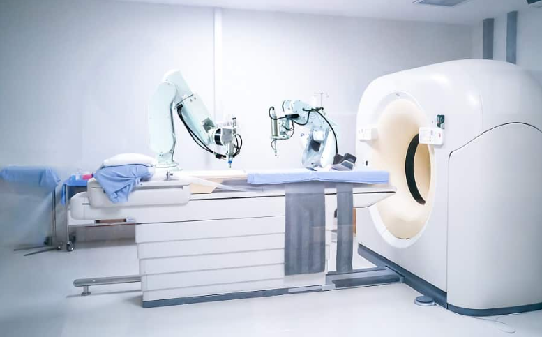

_____________________ |
|||||||||||||||
R O B O T S |
|||||||||||||||
_____________________ |
|||||||||||||||
¿Qué es un robot?Un robot es una entidad virtual o mecánica artificial. En la práctica, esto es por lo general un sistema electromecánico que, por su apariencia o sus movimientos, ofrece la sensación de tener un propósito propio. La independencia creada en sus movimientos hace que sus acciones sean la razón de un estudio razonable y profundo en el área de la ciencia y tecnología. La palabra robot puede referirse tanto a mecanismos físicos como a sistemas virtuales de software, aunque suele aludirse a los segundos con el término de bots. No hay un consenso sobre qué máquinas pueden ser consideradas robots, pero sí existe un acuerdo general entre los expertos y el público sobre que los robots tienden a hacer parte o todo lo que sigue: moverse, hacer funcionar un brazo mecánico, sentir y manipular su entorno y mostrar un comportamiento inteligente, especialmente si ese comportamiento imita al de los humanos o a otros animales. Actualmente podría considerarse que un robot es una computadora con la capacidad y el propósito de movimiento que en general es capaz de desarrollar múltiples tareas de manera flexible según su programación; así que podría diferenciarse de algún electrodoméstico específico. |
Historia de los robotsEn el siglo IV antes de Cristo, el matemático griego Arquitas de Tarento construyó un ave mecánica que funcionaba con vapor y a la que llamó «La paloma». También el ingeniero Herón de Alejandría (10-70 d. C.) creó numerosos dispositivos automáticos que los usuarios podían modificar, y describió máquinas accionadas por presión de aire, vapor y agua. Por su parte, el estudioso chino Su Sung levantó una torre de reloj en 1088 con figuras mecánicas que daban las campanadas de las horas. Al Jazarí (1136–1206), un inventor musulmán de la dinastía Artuqid, diseñó y construyó una serie de máquinas automatizadas, entre las que había útiles de cocina, autómatas musicales que funcionaban con agua, y en 1206 los primeros robots humanoides programables. Las máquinas tenían el aspecto de cuatro músicos a bordo de un bote en un lago, entreteniendo a los invitados en las fiestas reales. Su mecanismo contenía un tambor programable con clavijas que chocaban con pequeñas palancas que accionaban instrumentos de percusión. Podían cambiarse los ritmos y patrones que tocaba el tamborilero moviendo las clavijas. |
La robótica en la actualidadEn la actualidad, los robots comerciales e industriales se utilizan ampliamente y realizan tareas de forma más exacta o más barata que los humanos. También se emplean en trabajos demasiado sucios, peligrosos o tediosos para los humanos. Los robots se usan en plantas de manufactura, montaje y embalaje, en transporte, en exploraciones en la Tierra y en el espacio, cirugía, armamento, investigación en laboratorios y en la producción en masa de bienes industriales o de consumo. Otras aplicaciones incluyen la limpieza de residuos tóxicos, minería, búsqueda y rescate de personas y localización de minas terrestres. Existe una gran esperanza, especialmente en Japón, de que el cuidado del hogar para la población de edad avanzada pueda ser desempeñado por robots. Los robots parecen estar abaratándose y reduciendo su tamaño, una tendencia relacionada con la miniaturización de los componentes electrónicos que se utilizan para manejarlos. Además, muchos robots son diseñados en simuladores mucho antes de construirse y de que interactúen con ambientes físicos reales. Un buen ejemplo de esto es el equipo máquina espiritual, un equipo de 5 robots desarrollado totalmente en un ambiente virtual para jugar al fútbol en la liga mundial de la F.I.R.A. Además de los campos mencionados, hay modelos trabajando en el sector educativo, servicios (por ejemplo, en lugar de recepcionistas humanos o vigilancia) y tareas de búsqueda y rescate. |
-MedicinaRecientemente se ha logrado un gran avance en los robots dedicados a la medicina,1 con dos compañías en particular, Computer Motion e Intuitive Surgical, que han recibido la aprobación regulatoria en América del Norte, Europa y Asia para que sus robots sean utilizados en procedimientos de cirugía invasiva mínima. Desde la compra de Computer Motion (creador del robot Zeus) por Intuitive Surgical, se han desarrollado ya 6 modelos de robot Da Vinci por esta última, pasando por el primero modelo DaVinci, S, Si, Xi, X y el más reciente lanzado "SP". Actualmente hasta diciembre de 2017 se contabilizan en el mundo alrededor de 4409 sistemas Da Vinci, siendo Estados Unidos el país con más |
 |
equipos disponibles,con un total de 2,862. Con aplicaciones en Urología, Ginecología, Cirugía general, Coloproctología, Cirugía Pediátrica, Cirugía Torácica, Cirugía Cardíaca y ORL. También la automatización de laboratorios es un área en crecimiento. Aquí, los robots son utilizados para transportar muestras biológicas o químicas entre instrumentos tales como incubadoras, manejadores de líquidos y lectores. Otros lugares donde los robots están reemplazando a los humanos son la exploración del fondo oceánico y exploración espacial. Para esas tareas se suele recurrir a robots de tipo artrópodo. |
-Medios militaresUn impulsor muy significativo de este tipo de investigaciones es el desarrollo de equipos de espionaje militar. A fin de proteger a aquellos que ponen su vida en peligro, los robots de seguridad y defensa aptos para el combate pueden realizar numerosas misiones para ayudar a los profesionales de la seguridad pública y del ejército. |